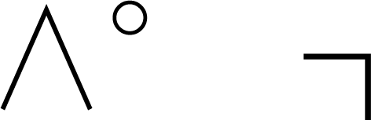
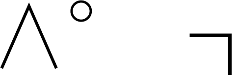
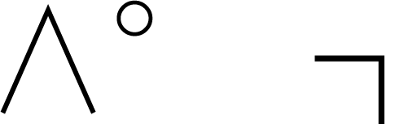
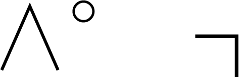

#LIMITED EDITION
Special Gift Box
Published by creative, community space pehu
Grant by Chishima Foundation for Creative Osaka
西天満のペフで行ったすべての出来事の記録をPDFなどのデジタルファイルにして、このPDFに詰め込みました。
This USB Card is The Digital Magazine 2019 of Pehu.
西天満のペフを運営していたメンバーたちが書いた、生活にまつわる17のエッセイと、成長と変化を表現した5つのアハ体験を収録した書籍。
17 Essays about life by pehu members and 5 Aha experiences about growth and change.
答えが二択の簡単な質問を収録した日めくりカレンダー。
This is a daily calendar of compilation simple two-choice questions.

小さくコンパクトなスティッキー＆ペン。ここに、気持ちの一片を書き出してみましょう。
This is the peace/piece of mind. won't forget / write down / make it visible
ペフの活動にまつわる、ささやかなプレゼントを同梱します。